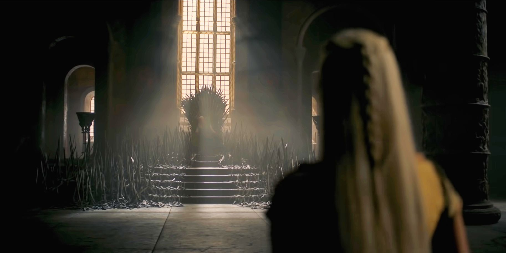
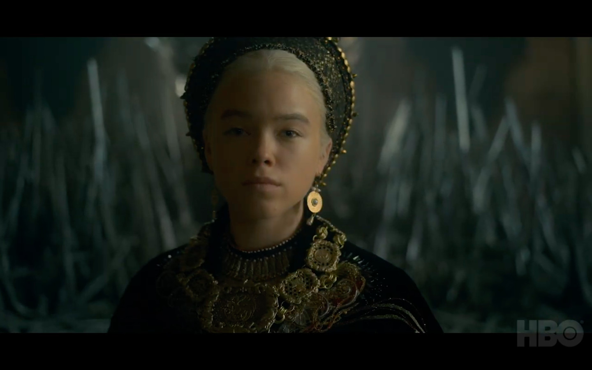
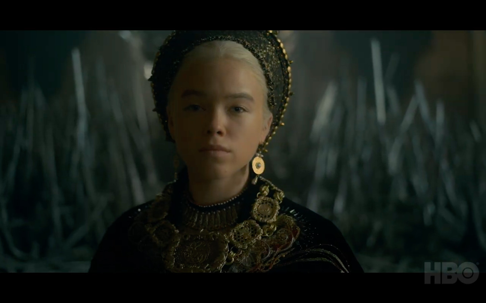
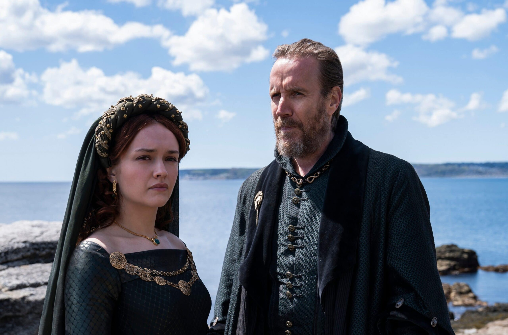
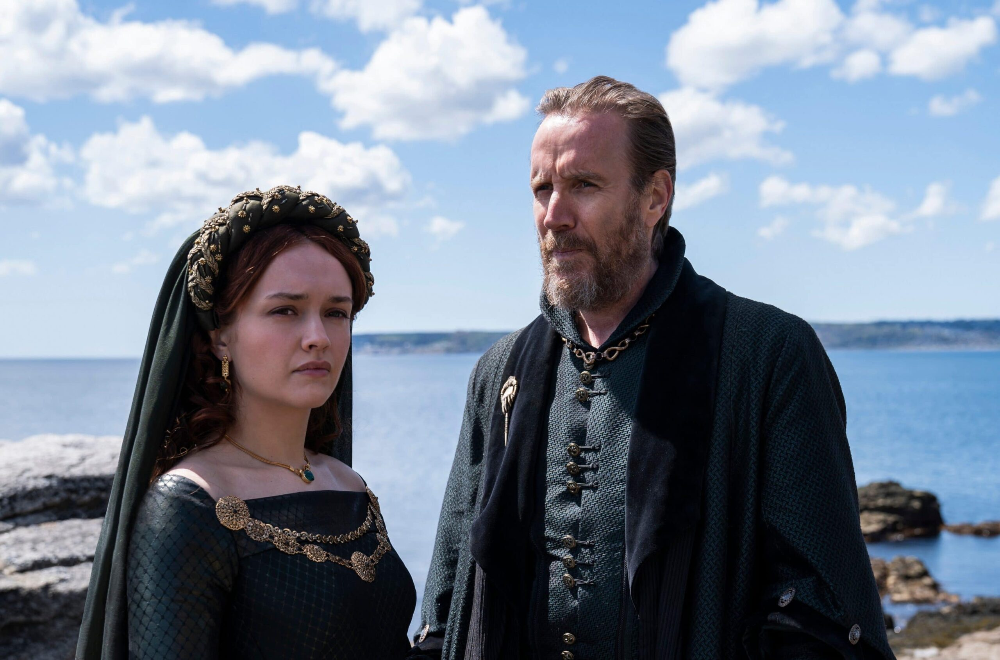
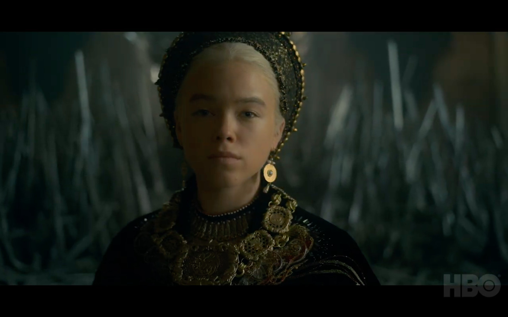
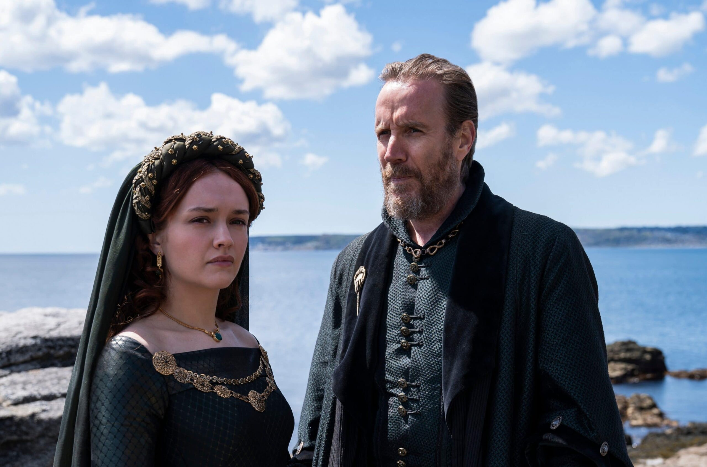
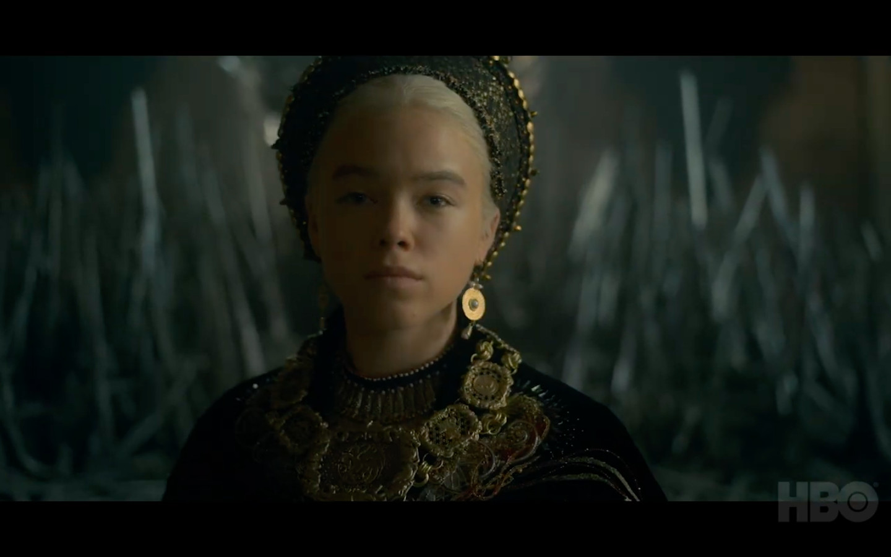
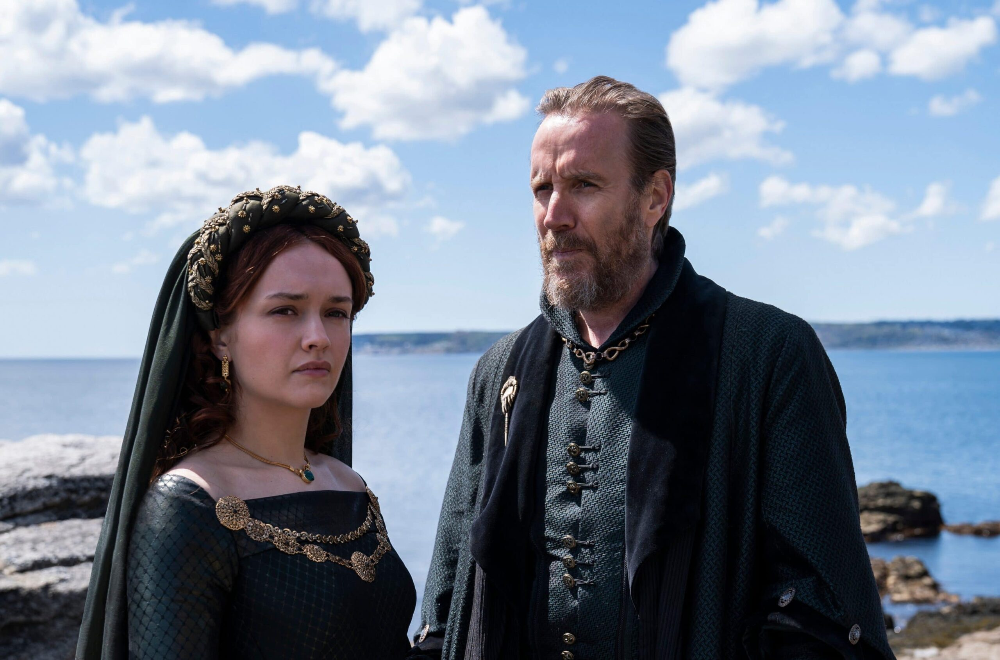

Confira abaixo algumas imagens da série:

 

 




Baseada no livro Fogo & Sangue de George R. R. Martin, A Casa do Dragão é um spin-off de Game of Thrones que narra a história de conquista de terras em Westeros, mais conhecida como a Dança dos Dragões. Situada mais de 200 anos antes dos eventos da série original, acompanhamos a guerra civil que acontece enquanto os meio-irmãos Aegon II (Tom Glynn-Carney) e Rhaenyra (Emma D'Arcy) almejam o trono após a morte do pai Viserys I (Paddy Considine). Rhaenyra é a filha mais velha, contudo, Aegon é o filho homem de um segundo casamento, o que acaba gerando uma crescente tensão entre dois clãs Targaryen sobre quem tem o verdadeiro direito ao trono. Como descrito em Game of Thrones, no tempo em que a família Targaryen dominava os 7 reinos, a casa era conhecida por seus imponentes dragões, que assim como a família, acabaram praticamente extintos após o conflito interno.
Situada 200 anos antes dos eventos de Game of Thrones, House of the Dragon será centrada na história da Casa Targaryen e seus dragões. A série estreia no dia 21 de agosto na HBOMAX.
Confira abaixo algumas imagens da série:


Assista House of the Dragon na HBO Max